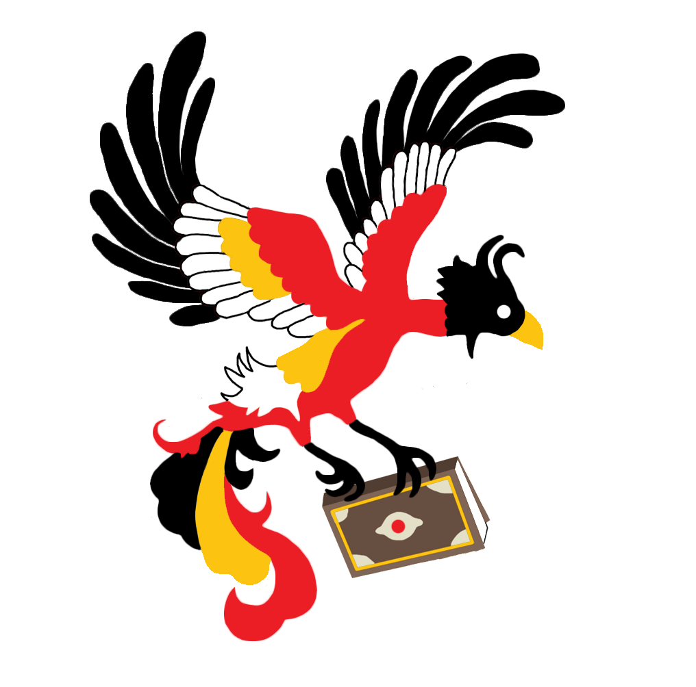

Persian Digital Library


This work is licensed under a Creative Commons Attribution-ShareAlike 4.0 International License.

Downloads
Our Corpus comes in many forms all of which are created from the standard from of our Corpus, TEI-XMl. We offer many other versions for researchers. All the current versions we have are listed below, with short descriptions. If none of our versions are in the form that is required please contact us, and we will see if we can create version that meets your requirements.
Note: All texts, programs, and technology developed during this project will be released online and made publicly available for everyone in the world to download, use, reuse, and adapt.
TEI-XML(Standard)
This is the Standard form of our Corpus. It is TEI-XML that meets epidoc guidelines. It has cRefPattern info to define the Xpaths and citation mapping patterns for the text. It also contains metadata files designed to work with the Capitains tool suite.
Support or Contact
If you have questions about the corpus or how to access it, contact ecooke1@umd.edu. If you would like to become a contributor for the PDL please contact (placeholder)